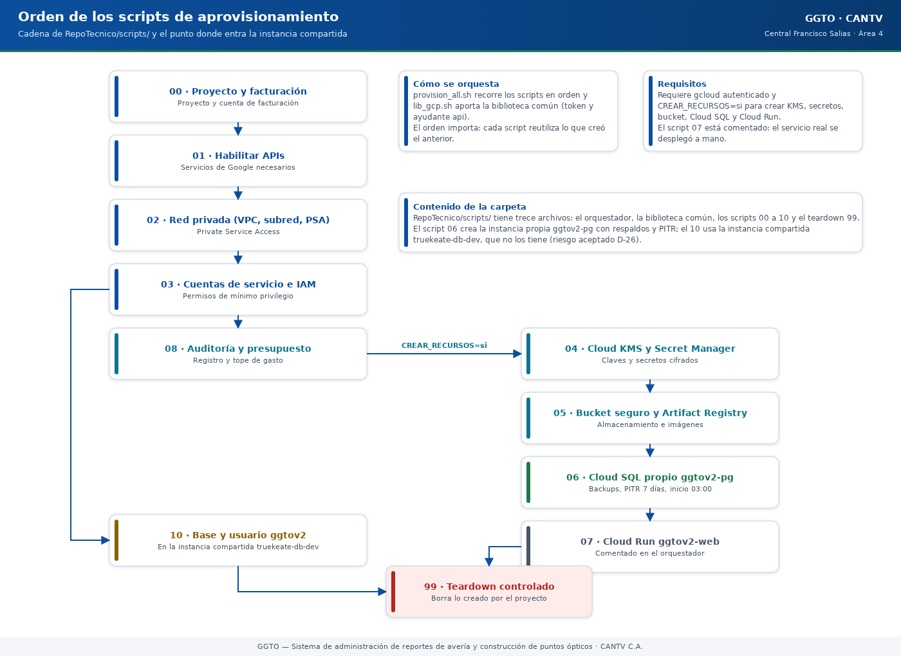

Sistema de administración de reportes de avería y construcción de puntos ópticos
Manual literal · DespliegueManual de scripts de aprovisionamiento GCP — GGTO (CANTV, Central Francisco Salias / Área 4)
Manual para todo público. Explica, en lenguaje sencillo, los guiones (scripts) que preparan la infraestructura de Google Cloud para la plataforma GGTO: quién hace qué, en qué orden y con qué precauciones. Un «script» es un archivo con órdenes que la computadora ejecuta una tras otra. Cuando un dato no pudo comprobarse, se indica como «pendiente de confirmar». Este manual nunca escribe valores de secretos: solo los nombra.
Manual para todo público. Explica, en lenguaje sencillo, los guiones (scripts) que preparan la infraestructura de Google Cloud para la plataforma GGTO: quién hace qué, en qué orden y con qué precauciones. Un «script» es un archivo con órdenes que la computadora ejecuta una tras otra. Cuando un dato no pudo comprobarse, se indica como «pendiente de confirmar». Este manual nunca escribe valores de secretos: solo los nombra.
1Empezar en 5 minutos
- Sepa qué son estos guiones y qué no son. Están en la carpeta
RepoTecnico/scripts/. Preparan la infraestructura en Google Cloud; no son la aplicación ni incluyen las variables de la aplicación (esas están en el manual de Entornos y Variables). - Orden mínima de ejecución. Primero
00(proyecto y facturación), luego01(habilitar APIs),02(red privada) y03(cuentas de servicio). Después, si hay facturación,04(claves y secretos),05(depósito y registro de imágenes) y06(base de datos Cloud SQL). - Entienda el orquestador.
provision_all.shcorre solo los pasos que no generan costo. Para incluir los que sí cuestan dinero, se ejecuta conCREAR_RECURSOS=si ./provision_all.sh. - Recuerde lo que realmente está desplegado. Por el bloqueo de facturación de
ggtov2, la operación real usa la instancia compartida detruekeate-maincon el guion10, no la instancia propiaggtov2-pgdel guion06. - Nunca borre a la ligera. El guion
99_eliminar_todo.shsolo funciona si se escribe exactamenteCONFIRM_DESTROY=ELIMINAR; además, el depósito y las claves de cifrado deben borrarse a mano.
2Visión general
Los guiones son la forma reproducible de preparar la infraestructura descrita en el documento de
infraestructura del proyecto. El estado del proyecto los registra como trece archivos .sh, y la
auditoría confirma ese mismo conteo, aclarando que lib_gcp.sh es una biblioteca (se reutiliza)
y no un paso de aprovisionamiento. Todos están escritos en bash, declaran set -euo pipefail
(detenerse ante cualquier error) y se apoyan en la API REST de Google Cloud mediante curl, con
python3 como ayudante para leer y construir JSON.

Código del gráfico (Mermaid)
flowchart TD
A["00 proyecto y facturación"] --> B["01 habilitar APIs"]
B --> C["02 red privada (VPC, subred, PSA)"]
C --> D["03 cuentas de servicio e IAM"]
D --> E["08 auditoría y presupuesto"]
E -->|"CREAR_RECURSOS=si"| F["04 Cloud KMS y Secret Manager"]
F --> G["05 bucket seguro y Artifact Registry"]
G --> H["06 Cloud SQL propio ggtov2-pg"]
H --> I["07 Cloud Run ggtov2-web<br/>(comentado en el orquestador)"]
D --> J["10 base y usuario ggtov2<br/>en truekeate-db-dev"]
I -.-> K["99 teardown controlado"]
J -.-> K2.1La carpeta RepoTecnico/scripts
La carpeta RepoTecnico/scripts/ contiene trece archivos:
| Archivo | Rol |
|---|---|
lib_gcp.sh |
Biblioteca común: token y ayudante api |
provision_all.sh |
Orquestador del aprovisionamiento completo |
00_crear_proyecto.sh |
Proyecto y facturación |
01_habilitar_apis.sh |
Habilitación de APIs |
02_red_privada.sh |
VPC, subred y Private Service Access |
03_iam_cuentas_servicio.sh |
Cuentas de servicio e IAM de mínimo privilegio |
04_secretos_kms.sh |
Cloud KMS (claves de cifrado) y Secret Manager |
05_storage_registry.sh |
Depósito (bucket) seguro y Artifact Registry |
06_cloudsql_postgres.sh |
Instancia Cloud SQL PostgreSQL |
07_cloudrun_web.sh |
Servicio Cloud Run |
08_auditoria_presupuesto.sh |
Auditoría de acceso a datos y presupuesto |
10_usar_instancia_truekeate.sh |
Base y usuario ggtov2 en la instancia compartida truekeate-db-dev |
99_eliminar_todo.sh |
Teardown controlado (borrado ordenado) |
La tabla funcional coincide con la que mantiene el documento de entornos. El documento de referencia de infraestructura también lista los guiones entregados.
2.2Convenciones (idempotencia, token gcloud, variables)
Idempotencia. Un guion idempotente puede ejecutarse varias veces sin duplicar ni dañar nada.
Cada guion consulta el recurso antes de crearlo y omite la creación si ya existe: 00_crear_proyecto.sh
comprueba el proyecto con una consulta y busca "projectId"; 02_red_privada.sh define una función
existe_net y repite el patrón para la subred y el rango PSA; 03_iam_cuentas_servicio.sh comprueba
la cuenta de servicio antes de crearla; 04_secretos_kms.sh no sobreescribe secretos existentes;
05_storage_registry.sh verifica el depósito y el repositorio; 06_cloudsql_postgres.sh comprueba la
instancia; y 10_usar_instancia_truekeate.sh comprueba base y usuario antes de crearlos. La conexión
de peering de 02_red_privada.sh es la única operación que se ejecuta siempre con force=true,
porque un reintento devuelve un error benigno.
Token de gcloud. Ningún guion llama a gcloud para crear recursos: usan curl contra las API
REST. La única dependencia opcional de gcloud está en la función gcp_token. Esto permite ejecutar
los guiones incluso cuando la herramienta de línea de comandos gcloud no está operativa, gracias
al respaldo de credenciales de usuario y al servidor de metadatos.
Variables. Las variables globales tienen valores por defecto y pueden sobreescribirse por
entorno. Se definen al final de lib_gcp.sh: PROJECT_ID (por defecto ggtov2), REGION (por
defecto europe-west1), BILLING_ACCOUNT y ORG_ID. Las variables particulares de cada guion
(TIER, HA, BUDGET_USD, IMAGE, CREAR_RECURSOS, CONFIRM_DESTROY) se documentan en su
sección correspondiente. El manual 01-entornos-y-variables.md de esta misma colección describe las
variables de la aplicación; aquí solo se tratan las del aprovisionamiento.
3Biblioteca común (scripts/lib_gcp.sh)
lib_gcp.sh se carga con source desde todos los guiones y aporta tres cosas: la obtención del
token, el ayudante de llamadas REST y las variables globales.
3.1Obtención del token (gcp_token)
La función gcp_token consigue un access token (una credencial temporal) probando cuatro fuentes
en orden estricto:
| Orden | Fuente | Condición |
|---|---|---|
| 1 | $GOOGLE_ACCESS_TOKEN |
Si la variable está definida |
| 2 | gcloud auth print-access-token |
Si gcloud existe y responde |
| 3 | Credenciales de usuario (refresh_token) |
Si existe ~/.config/gcloud/credentials.db |
| 4 | Servidor de metadatos de GCE | Si responde metadata.google.internal |
Si ninguna fuente funciona, imprime ERROR: no se pudo obtener token y termina con un código
distinto de cero. La tercera vía usa sqlite3 para leer credentials.db, intercambia el
refresh_token en https://oauth2.googleapis.com/token y toma la cuenta indicada por
GCP_USER_ACCOUNT. El valor por defecto de esa variable de cuenta aparece en el propio archivo;
no se reproduce aquí por tratarse de un identificador personal.
3.2Helper api y variables globales
El ayudante api recibe el método, la dirección (URL) y, opcionalmente, un cuerpo JSON. Cuando hay
cuerpo, envía curl -s -X "$method" con las cabeceras Authorization: Bearer y
Content-Type: application/json; cuando no lo hay, omite el cuerpo. Todos los guiones construyen las
direcciones con $PROJECT_ID, $REGION, $BILLING_ACCOUNT u $ORG_ID, y procesan la respuesta con
python3 -c para extraer campos o detectar "error". Las variables globales se fijan con el patrón
${VARIABLE:-valor}, de modo que el operador puede apuntar a otro proyecto o región sin editar el
archivo.
4Orquestador (scripts/provision_all.sh) y variable CREAR_RECURSOS
provision_all.sh ejecuta el aprovisionamiento en orden y separa los pasos no facturables de los
facturables. Primero se sitúa en su propio directorio con cd "$(dirname "$0")", de forma que las
llamadas relativas ./00_... funcionan desde cualquier directorio de invocación.
| Ejecución | Pasos que corre | Efecto |
|---|---|---|
./provision_all.sh |
00, 01, 02, 03, 08 |
No genera costo |
CREAR_RECURSOS=si ./provision_all.sh |
Los anteriores + 04, 05, 06 |
Genera costo recurrente |
El bloque condicional comprueba [[ "${CREAR_RECURSOS:-no}" == "si" ]] y, si no se activa, imprime
que los recursos facturables quedan omitidos y recomienda ejecutarlo cuando la facturación esté
activa. El paso 07_cloudrun_web.sh está comentado en el orquestador, con la nota de que debe
descomentarse cuando exista una imagen en Artifact Registry. Esto explica por qué el despliegue de
Cloud Run se hace por separado en la práctica.
5Script por script
Cada subsección describe el guion, los recursos que crea, las variables que consume y las notas operativas verificadas.
5.100_crear_proyecto.sh
Crea el proyecto GGTOv2 dentro de la organización y vincula la cuenta de facturación. Variables que
usa: $PROJECT_ID, $ORG_ID y $BILLING_ACCOUNT.
- Consulta previa: hace
GET .../v1/projects/$PROJECT_ID; si la respuesta contiene"projectId", informa que el proyecto ya existe con su número y su estado. - Creación: hace
POST .../v1/projectsconname: "GGTOv2"yparentde tipoorganization. - Espera: sondea la operación hasta 30 veces, con pausas de 6 segundos, hasta ver
"done": true. - Facturación: hace
PUT .../billingInfoconbillingAccounts/$BILLING_ACCOUNTy luego unGETpara imprimirbillingEnabled. - Nota: advierte que el mensaje
Cloud billing quota exceededsignifica que la cuenta alcanzó el máximo de cinco proyectos. Ese cupo agotado es exactamente el bloqueo que obligó a usartruekeate-main.
5.201_habilitar_apis.sh
Habilita las APIs de Google Cloud que requiere la plataforma. Primero obtiene el número de proyecto
(projectNumber) y luego recorre dos listas:
| Grupo | APIs | Facturación |
|---|---|---|
SIN_BILLING |
cloudresourcemanager, serviceusage, iam, iamcredentials, cloudbilling, sqladmin, sql-component, servicenetworking, storage, logging, monitoring, networkconnectivity, cloudkms, cloudtrace, cloudprofiler, clouderrorreporting, servicecontrol |
No requiere |
CON_BILLING |
compute, vpcaccess, secretmanager, dlp, run, artifactregistry, cloudbuild, containerregistry, certificatemanager, billingbudgets |
Requiere |
Para cada servicio hace POST .../services/$s:enable e imprime OK o PENDIENTE según la
respuesta. Cierra recordando que las APIs marcadas PENDIENTE requieren vincular facturación.
5.302_red_privada.sh
Crea la red privada dedicada: la VPC (red virtual), la subred y el rango de Private Service Access
para Cloud SQL. Variables locales: VPC=ggtov2-vpc, SUBNET=ggtov2-subnet,
PSA_RANGE=ggtov2-psa-range y PSA_PREFIX=20.
| Recurso | Configuración |
|---|---|
VPC ggtov2-vpc |
autoCreateSubnetworks:false, enrutamiento GLOBAL |
Subred ggtov2-subnet |
10.10.0.0/24, con privateIpGoogleAccess:true |
| Rango PSA | INTERNAL, VPC_PEERING, prefijo /20 |
| Conexión de peering | servicenetworking con force=true |
Cierra indicando que Cloud SQL usará IP privada dentro de la VPC. Es la base de red que consumiría
06_cloudsql_postgres.sh.
5.403_iam_cuentas_servicio.sh
Crea dos cuentas de servicio y aplica enlaces IAM de mínimo privilegio (es decir, solo los permisos
necesarios). Las cuentas son ggtov2-app (ejecución de Cloud Run) y ggtov2-deploy (CI/CD).
| Cuenta | Roles asignados |
|---|---|
ggtov2-app |
cloudsql.client, secretmanager.secretAccessor, logging.logWriter, monitoring.metricWriter, cloudtrace.agent, cloudprofiler.agent, serviceusage.serviceUsageConsumer, cloudkms.cryptoKeyDecrypter |
ggtov2-deploy |
run.admin, artifactregistry.writer, iam.serviceAccountUser, cloudbuild.builds.editor, storage.objectAdmin, cloudsql.client |
La aplicación de los enlaces es idempotente: obtiene la política con getIamPolicy, añade el miembro
solo si no está presente con una función add y la vuelve a fijar con setIamPolicy.
5.504_secretos_kms.sh
Crea el llavero y las claves de Cloud KMS (CMEK, claves de cifrado gestionadas por el cliente) y los
secretos de la plataforma. Variables: KR=ggtov2, KEY_SEC=ggtov2-secrets, KEY_STO=ggtov2-storage.
- Rotación: las claves se crean con propósito
ENCRYPT_DECRYPTy unarotationPeriodde7776000s, es decir, 90 días. - Generación de valores: la función
gcp_genproduce una cadena aleatoria de 32 caracteres conopenssl rand; los valores no se imprimen. - Secretos creados:
ggtov2-db-password,ggtov2-db-root-password,ggtov2-app-secret-keyyggtov2-django-secret-key. El cuarto conserva un nombre heredado de Django; su uso real en el código actual está pendiente de confirmar. - CMEK: cada secreto usa replicación
userManageden la región concustomerManagedEncryption. - Permisos: concede
roles/secretmanager.secretAccessoraggtov2-appsobreggtov2-db-password,ggtov2-app-secret-keyyggtov2-django-secret-key.
5.605_storage_registry.sh
Crea el depósito seguro de evidencias y el repositorio de imágenes. El nombre del depósito es
ggtov2-assets-<projectNumber> y la clave CMEK es ggtov2-storage.
| Ajuste del depósito | Valor |
|---|---|
| Ubicación y clase | EUROPE-WEST1, STANDARD |
| Clave por defecto | ggtov2-storage (CMEK) |
| Acceso | uniformBucketLevelAccess y publicAccessPrevention: enforced |
| Versionado | enabled: true |
| Ciclo de vida | Borra las versiones no vigentes a los 365 días |
| Retención | 30 días (2592000 segundos), sin bloquear |
El repositorio ggtov2-web de Artifact Registry se crea con formato DOCKER y etiqueta
proyecto=ggtov2.
5.706_cloudsql_postgres.sh
Crea la instancia Cloud SQL propia ggtov2-pg con IP privada, SSL y respaldos. Variables:
INSTANCE=ggtov2-pg, DB_NAME=ggtov2, DB_USER=ggtov2_app, TIER (por defecto db-f1-micro) y
HA (por defecto ZONAL). El perfil por defecto es de desarrollo y el propio encabezado advierte
cambiarlo para producción.
| Ajuste | Valor |
|---|---|
| Motor | POSTGRES_16 |
| Disco | PD_SSD, 10 GB, autoescalado hasta 50 GB |
| Respaldos | Activados, PITR 7 días, inicio 03:00 |
| Red | ipv4Enabled:false, red ggtov2-vpc, sslMode: ENCRYPTED_ONLY |
| Protección | deletionProtectionEnabled:true |
| Contraseñas | Mínimo 12 caracteres, complejidad por defecto, sin reutilizar en 5 |
| Banderas | cloudsql.iam_authentication=on, log_min_duration_statement=500, log_connections=on |
| Mantenimiento | Domingo a las 03:00, pista stable |
La contraseña de la base y la de root se leen de Secret Manager. Tras crear la instancia (con
sondeo de hasta 60 iteraciones de 15 segundos), crea la base ggtov2 con charset UTF8 y el usuario
ggtov2_app con host %. Cierra mostrando la forma de la cadena de conexión, sin revelar la
contraseña.
Nota de fidelidad: lo realmente desplegado no es esta instancia, sino la base
ggtov2dentro de la instancia compartidatruekeate-db-dev(PostgreSQL 15.18). Este guion es el camino previsto al desbloquear la facturación.
5.807_cloudrun_web.sh
Despliega la plataforma en Cloud Run con salida VPC directa. Variables: SERVICE=ggtov2-web e
IMAGE (por defecto $REGION-docker.pkg.dev/$PROJECT_ID/ggtov2-web/app:latest).
El cuerpo del servicio define: puerto 8080; variables DB_USER, DB_NAME, DB_HOST con el socket
/cloudsql/<proyecto>:<región>:ggtov2-pg y SECRET_KEY desde el secreto ggtov2-app-secret-key;
límites de 1 CPU y 512 MiB; acceso VPC por ggtov2-vpc/ggtov2-subnet; escalado de 0 a 10
instancias y un timeout de 300 segundos. Después de crear el servicio, aplica un enlace IAM que
concede roles/run.invoker a allUsers.
Riesgo documentado: ese enlace hace el servicio público. El estado del proyecto pide restringir el acceso porque el servicio ya contiene PII real. En el despliegue real la URL pública también quedó expuesta.
5.908_auditoria_presupuesto.sh
Activa la auditoría de acceso a datos y crea el presupuesto con alertas.
- Auditoría: construye
auditConfigsparasecretmanager,cloudkms,cloudsqlystoragecon los tiposADMIN_READ,DATA_READy/oDATA_WRITE, y los fija consetIamPolicy. Si la respuesta no traeauditConfigs, avisa que no se persistió. - Presupuesto: hace
POST .../billingAccounts/$BILLING_ACCOUNT/budgetscon el nombreGGTOv2 mensual, un importe de${BUDGET_USD:-50}USD y umbrales al 50 %, 90 % y 100 %. La variable del importe esBUDGET_USD.
5.1010_usar_instancia_truekeate.sh
Es el guion que permitió operar sin facturación propia. Da de alta una base y un usuario
dedicados a GGTO dentro de la instancia Cloud SQL existente en truekeate-main, y habilita el
acceso de la ejecución.
| Dato | Valor |
|---|---|
| Proyecto origen | truekeate-main |
| Instancia | truekeate-db-dev |
| Base / usuario | ggtov2 / ggtov2_app |
connectionName |
truekeate-main:southamerica-east1:truekeate-db-dev |
| Cuenta de servicio de la app | ggtov2-app@ggtov2.iam.gserviceaccount.com |
| Cuenta de servicio de TrueKeate | truekeate-app-sa@truekeate-main.iam.gserviceaccount.com |
Pasos: genera una contraseña aleatoria de 32 caracteres sin imprimirla; crea o versiona los secretos
ggtov2-db-password y ggtov2-db-connection en truekeate-main; concede
secretmanager.secretAccessor sobre ambos a las dos cuentas de servicio; crea la base y el usuario
solo si no existen, sin cambiar la contraseña del usuario ya creado; y añade roles/cloudsql.client
para la cuenta de servicio de GGTO en la política de truekeate-main. El resumen final indica que la
contraseña vive solo en Secret Manager y muestra la ruta del socket para Cloud Run.
5.1199_eliminar_todo.sh
Teardown controlado (borrado ordenado) de los recursos de GGTO. Antes de tocar nada exige
CONFIRM_DESTROY=ELIMINAR; si no coincide, aborta con un mensaje. El orden de borrado es: desactivar
deletionProtectionEnabled de la instancia y borrarla, borrar el servicio Cloud Run ggtov2-web,
el repositorio ggtov2-web, la VPC y los cuatro secretos. El cierre advierte que el depósito y las
claves KMS deben borrarse manualmente por su política de retención.
6Scripts auxiliares del proyecto
Además de los guiones de infraestructura, el repositorio incluye utilidades de operación y de
pruebas. No forman parte de provision_all.sh y se ejecutan de forma explícita.
6.1scripts/inyectar_super_usuario.py
Inyecta el Super Usuario de la plataforma con rol SUPER. Es idempotente: si el P00 ya existe,
actualiza sus datos y su clave. Sus garantías de seguridad son relevantes para la operación:
- La clave no se escribe en el archivo ni en la línea de comandos: se lee de la variable de
entorno indicada por
--clave-env(por defectoGGTO_SUPER_CLAVE) o se pide de forma oculta. - Exige confirmación interactiva salvo que se use
--si, y exige un mínimo de 8 caracteres. - Registra cada ejecución en
RepoTecnico/BaseOperaciones/inyeccion_super_usuario.log. - Reutiliza el mismo hash y el mismo diccionario de palabras que la aplicación.
- Opcionalmente genera y guarda las 12 palabras de seguridad en
dispositivo_seguridady las muestra una sola vez.
Parámetros principales: --p00, --correo, --nombre, --apellido, --rol, --id-central,
--con-palabras, --dry-run y --si. Las credenciales de base se toman de DB_HOST, DB_PORT,
DB_NAME, DB_USER, DB_PASSWORD y DB_SSLMODE, o bien del parámetro --dsn.
6.2scripts/recalcular_cuadrilla0.py
Recalcula la marca de cuadrilla 0 (el campo caso.en_gestion_supervisor) de los casos existentes,
usando la configuración vigente. Sirve para aplicar un cambio de criterio sin volver a ingerir el
archivo CSV.
- Por defecto es simulación: informa qué cambiaría sin escribir nada. Para escribir hay que pasar
--aplicary confirmar (o usar--si). - Lee las claves
despacho.criterio_cuadrilla0,despacho.frases_campo,despacho.frases_supervisorydespacho.columnas_evaluarde la tablaconfiguracion, y evalúa con la funciónapp.services.cuadrilla0.evaluar. - Limita a 20 los cambios impresos y resume el resto.
- Registra la ejecución en
RepoTecnico/BaseOperaciones/recalculo_cuadrilla0.log.
Su uso real está documentado en la decisión D-59: se recalcularon los 42 casos reales pasando
despacho.criterio_cuadrilla0 a SUPERVISOR.
6.3RepoTecnico/pruebas/run_e2e.sh
Orquesta las pruebas E2E de navegador contra un esquema aislado. El manual 04-pruebas-y-ci.md de
esta colección lo detalla en profundidad; aquí se resume su relación con el aprovisionamiento:
reutiliza la base compartida a través del Cloud SQL Auth Proxy en 127.0.0.1:5433, levanta
uvicorn app.main:app en http://127.0.0.1:8090 y usa DB_SCHEMA=ggto_e2e. Exporta
LD_LIBRARY_PATH y FONTCONFIG_FILE para Chromium, y termina el backend con un trap/kill al
salir.
6.4RepoTecnico/pruebas/seed_e2e.py
Siembra los datos deterministas de las pruebas E2E. Crea o reinicia el esquema aislado (por defecto
ggto_e2e) a partir de RepoTecnico/db/schema.sql, y siembra los usuarios E2EADM, E2ESUP y
E2ETEC, el sector E2E-S1, la cuadrilla E2E-C1 y 8 casos E2E-…. Aborta si el esquema es
public, para no tocar producción. En su ejecución real genera RepoTecnico/pruebas/logs/seed.json.
7Teardown y confirmación (CONFIRM_DESTROY=ELIMINAR)
El borrado de recursos es destructivo e irreversible, y el diseño lo protege con una confirmación
explícita. 99_eliminar_todo.sh compara CONFIRM_DESTROY con la cadena literal ELIMINAR y aborta
si no coincide. Para ejecutarlo:
cd RepoTecnico/scripts
CONFIRM_DESTROY=ELIMINAR ./99_eliminar_todo.sh
Puntos que conviene tener presentes antes de usarlo:
- El guion apunta a
$PROJECT_ID, que por defecto esggtov2. No borra la baseggtov2ni el usuarioggtov2_appde la instanciatruekeate-db-dev, ni los secretos creados entruekeate-mainpor10_usar_instancia_truekeate.sh. Ese borrado está pendiente de confirmar como procedimiento documentado y debe hacerse de forma manual y coordinada con TrueKeate. - Los borrados de la instancia, el servicio, el repositorio, la VPC y los secretos usan
>/dev/null 2>&1 || true, de modo que un recurso inexistente no aborta el teardown. - El depósito y las claves KMS no se borran automáticamente por su política de retención.
- El servicio Cloud Run realmente desplegado se llama
ggto-webentruekeate-main, mientras que el guion intenta borrarggtov2-weben$PROJECT_ID; por tanto, elggto-webreal no queda cubierto por este guion.
8Diferencia entre lo previsto (ggtov2) y lo realmente desplegado (truekeate-main)
La infraestructura prevista y la realmente operativa divergen por un bloqueo administrativo, no por
un cambio de diseño. La cuenta de facturación tiene agotado el cupo de cinco proyectos, de modo que
ggtov2 quedó sin facturación y sin APIs de despliegue. Para no detener el proyecto, se reutilizó la
instancia Cloud SQL de truekeate-main.
| Aspecto | Previsto (ggtov2) |
Real (truekeate-main) |
|---|---|---|
| Proyecto | ggtov2 |
truekeate-main |
| Servicio Cloud Run | ggtov2-web |
ggto-web |
| Imagen | .../ggtov2/ggtov2-web/app:latest |
southamerica-east1-docker.pkg.dev/truekeate-main/truekeate-repo/ggto-web:v14 |
| Instancia de datos | ggtov2-pg (PostgreSQL 16, privada) |
truekeate-db-dev (PostgreSQL 15.18, compartida) |
| Base / usuario | ggtov2 / ggtov2_app |
ggtov2 / ggtov2_app (mismos nombres) |
| Buena parte de 04, 05 y 06 | Ejecutables con CREAR_RECURSOS=si |
No ejecutados por falta de facturación |
| Cuenta de servicio de ejecución | ggtov2-app@ggtov2… |
ggto-web-sa@truekeate-main… |
Consecuencias operativas verificadas:
- La base propia no se creó: por eso existe
10_usar_instancia_truekeate.sh, que da base, usuario, secretos y permiso cruzado dentro detruekeate-main. - La instancia compartida no tiene los respaldos, el PITR ni el SSL obligatorio que sí definiría
06_cloudsql_postgres.sh; ese riesgo quedó aceptado como D-26 hasta migrar. - El paso
07_cloudrun_web.shno se ejecutó enggtov2; el despliegue real usa el proyectotruekeate-maincon una cuenta de servicio distinta. - La ruta de convergencia está definida: al desbloquear la facturación, migrar el servicio a
ggtov2con07_cloudrun_web.shy su propio Cloud SQLggtov2-pg. - El importe y la fecha exactos para esa migración están pendientes de confirmar; el estado del proyecto solo registra «desbloquear la facturación GCP y migrar».